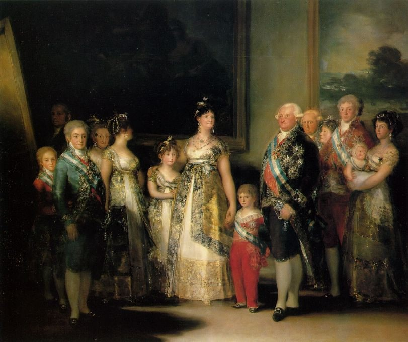

יש לנו ארץ נהדרת

היצירה המקורית בה בחרנו הייתה "משפחת קרלוס הרביעית" של הצייר גויה. יצירה זו של גויה מתאפיינת בדו משמעות של סגנון ומסר: מצד אחד מוצגות הדמויות בצורה מעודנת ומכובדת, ומצד שני גויה מעביר בפניהם של הדמויות את תחושותיו וסלידתו מהן. פניהם מביעות שחיתות, סכסוכים פוליטיים, סטיות וזימה, המעוררים בוז ומבוכה. החלטנו לקחת את תמונת חברי הכנסת והחליף את תמונותיהם בתמונות של נבחרי ציבור ואסירים שהורשעו בעבירות שונו. מטרתנו הייתה להפוך תמונה שנראית כתמונה רגילה לתמונה שמרמזת על האכזבה הקשה מנבחרי הציבור שלנו.